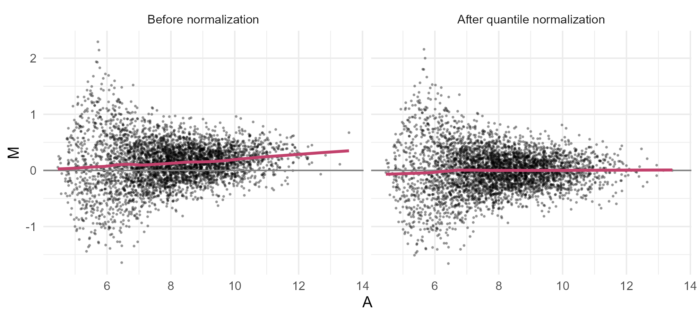
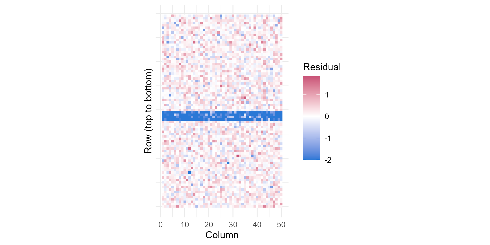

Module 10 · Lesson 12 of 13 Week 158 of 160 About 5–7 hours
Microarray data analysis I
From raw intensities to comparable measurements
How does PL-7 cope with toluene, the solvent of the enzyme process? A microarray experiment measured all 4,000 of its genes on 12 arrays. Learn how microarrays work, then do the preprocessing every expression study needs: log transformation, background correction, MA plots and intensity-dependent bias, quantile normalization with limma, and quality control with correlations, a spatial image that finds a scratched array, principal components that show a day effect, and array weights.
The enzyme process runs in a two-phase mixture of water and toluene, and toluene is toxic to bacteria: it dissolves into their membranes. Amaya’s group wants to know how PL-7 responds, because the strain that survives the solvent best will make the most enzyme. They grew it with and without toluene and measured the expression of all 4,000 of its genes with microarrays.
A microarray is a glass slide with thousands of spots, each holding many copies of a short DNA probe for one gene. RNA from the cells is copied into labelled DNA and washed over the slide; each labelled molecule sticks to the probe that matches it, and a scanner measures each spot’s fluorescence. More RNA from a gene, brighter spot. This is a one-colour design: one sample per array. (RNA sequencing has largely replaced microarrays since about 2010, but the statistics, and limma, carry over directly.)
Last two lessons of the course! A microarray gives you 4,000 measurements per sample, and 4,000 chances to fool yourself. Preprocessing is where you stop that from happening.
In this lesson you’ll:
- understand how one-colour microarrays measure expression
- log-transform intensities and see why
- correct for background, and look at MA plots and intensity-dependent bias
- normalize arrays with quantile normalization
- check quality: correlations, a spatial image, principal components and array weights
The design: 12 arrays, 6 controls and 6 with toluene, run on three days (2 controls and 2 toluene arrays per day). solvent_array_raw.csv has the raw intensities (one row per probe, one column per array); solvent_array_samples.csv the design; solvent_array_probes.csv each probe’s gene, function and position on the array (80 rows × 50 columns). The setup code reads them, with the intensities as a matrix R.
Your turn. Look at the raw intensities: their range, and each array’s median.
Each array’s median.
print(samples)
c(min = min(R), max = max(R), round(apply(R, 2, median)))Intensities from 68 to 20,261, so a few spots are 300 times brighter than the dimmest; and the arrays’ medians range from 256 (A2) to 470 (B2), a factor of 1.8 that has nothing to do with biology: the amount of RNA loaded, the labelling, the scanner. Normalization will remove it.
Logs
Expression is analyzed on the log₂ scale. Intensities are skewed, with a few very bright spots; biological effects are multiplicative (a gene twice as active gives a spot twice as bright); and on the log₂ scale, a difference of 1 is a doubling, the fold change biologists talk in. Measurement error is also closer to constant on the log scale.
Your turn. Compare the skewness of the raw and log₂ intensities of the first array, and the log₂ medians of all arrays.
log2(R).
skew <- function(v) mean((v - mean(v))^3) / sd(v)^3
L <- log2(R)
c(raw_skew = skew(R[, 1]), log_skew = skew(L[, 1]), range_of_log_medians = diff(range(apply(L, 2, median))))The raw intensities have a skewness of 5.9 (a long tail of bright spots); their logs 0.73, much closer to symmetric. On the log scale, the arrays’ medians differ by up to 0.88, a factor of 2^{0.88} = 1.8.
Background
Every spot has some fluorescence even without its target: the glass, non-specific binding, the scanner’s offset. Here, the dimmest spots, around 100 units, are mostly background. Subtracting a background estimate removes the bias at low intensities, but makes their logs noisy, or impossible when the difference is zero or negative. limma’s normexp method models each array’s intensities as a normal background plus an exponential signal, and replaces each spot by its expected signal, always positive.
Your turn. Correct the background with backgroundCorrect.matrix(), and compare the lowest intensities and their spread before and after.
The method is "normexp".
B <- backgroundCorrect.matrix(R, method = "normexp", offset = 16, verbose = FALSE)
dim_spots <- R[, 1] < quantile(R[, 1], 0.1) # the dimmest 10% on the first array
c(raw_min = min(R[, 1]), corrected_min = min(B[, 1]),
sd_log_dim_raw = sd(log2(R[dim_spots, 1])), sd_log_dim_corrected = sd(log2(B[dim_spots, 1])))The dimmest spot on A1 goes from 79 to 20.5, and the dimmest 10% of spots spread out: the standard deviation of their logs rises from 0.19 to 0.40. That’s the trade-off. Raw dim spots look consistent only because they’re mostly background, which squeezes their logs together and hides real differences; removing it un-squeezes them, and adds noise. The offset = 16 keeps the corrected values away from zero, where logs would explode.
MA plots
To compare two arrays, plot each gene’s log ratio M = \log_2 x - \log_2 y against its average log intensity A = \frac12(\log_2 x + \log_2 y): an MA plot. If most genes don’t change between the two samples (the usual assumption), the cloud should centre on M = 0 at every intensity. A shift means one array is brighter; a curve means an intensity-dependent bias, common with the dyes and scanners.
Your turn. Make the MA values for the two day-1 controls, A1 and A3, fit a lowess curve, and compare the curve at low and high intensity.
High intensity: the 95th percentile, 0.95.
B <- backgroundCorrect.matrix(R, method = "normexp", offset = 16, verbose = FALSE)
x <- log2(B[, "A1"]); y <- log2(B[, "A3"])
M <- x - y; A <- (x + y) / 2
fit <- lowess(A, M, f = 0.3)
c(median_M = median(M), M_at_low_A = approx(fit$x, fit$y, xout = quantile(A, 0.05), ties = mean)$y,
M_at_high_A = approx(fit$x, fit$y, xout = quantile(A, 0.95), ties = mean)$y)A median M of 0.145: A1 is about 10% brighter than A3 overall. And the lowess curve rises from 0.055 at low intensity to 0.224 at high intensity: the difference depends on brightness, so a single scaling factor couldn’t fix it. The figure below shows the cloud before and after normalization.

Normalization
Normalization removes the technical differences between arrays (brightness, scanner settings, labelling efficiency) so that the remaining differences are biological. Quantile normalization (Bolstad and others, 2003) makes every array’s distribution identical: sort each array, average the sorted values across arrays, and give each gene, on each array, the average value for its rank. It assumes that the distribution of expression is the same in every sample, reasonable when most genes don’t change.
Your turn. Quantile-normalize the log₂ intensities with normalizeBetweenArrays(), and check the arrays’ medians and the A1-versus-A3 lowess curve.
method = "quantile".
B <- backgroundCorrect.matrix(R, method = "normexp", offset = 16, verbose = FALSE)
N <- normalizeBetweenArrays(log2(B), method = "quantile")
M <- N[, "A1"] - N[, "A3"]; A <- (N[, "A1"] + N[, "A3"]) / 2
fit <- lowess(A, M, f = 0.3)
c(range_of_medians = diff(range(apply(N, 2, median))), max_abs_curve = max(abs(fit$y)))The arrays’ medians now differ by only 0.005, and the A1-versus-A3 curve stays within 0.067 of zero. Why not exactly zero? 68% of the raw intensities are tied with another spot on the same array (they’re whole numbers), and limma gives tied spots the average of their target values, which shifts a few values slightly. With ties = FALSE, the medians are identical.
Quality control
Your turn. Correlate every pair of normalized arrays, and find the array least like the others.
Nothing to fill in: run it and read the result.
N <- normalizeBetweenArrays(log2(backgroundCorrect.matrix(R, method = "normexp", offset = 16, verbose = FALSE)), method = "quantile")
C <- cor(N); diag(C) <- NA
mean_cor <- colMeans(C, na.rm = TRUE)
round(sort(mean_cor)[1:3], 4)C3 correlates with the other arrays at 0.868 on average; the next lowest, A2 and A4, at 0.920 and 0.923. Whatever is wrong with C3, normalization didn’t fix it.
Your turn. Why? Compute C3’s residuals from the gene-wise median of all arrays, and average them by the spots’ row on the slide.
Average by probes$row.
N <- normalizeBetweenArrays(log2(backgroundCorrect.matrix(R, method = "normexp", offset = 16, verbose = FALSE)), method = "quantile")
res <- N[, "C3"] - apply(N, 1, median)
by_row <- tapply(res, probes$row, mean)
c(worst_rows = paste(order(by_row)[1:4], collapse = ","), worst_mean = min(by_row), typical_sd = sd(by_row[-order(by_row)[1:4]]))Rows 41 to 44 of C3 are on average 2.48 below the other arrays (a factor of 2^{2.48} = 5.6 dimmer), while the other rows’ averages vary by only 0.049. A scratch or a smear across the slide: the image below shows it. Normalization can’t fix a local defect, because it treats all spots on an array alike.

Your turn. Look at the overall structure with a principal components analysis (Module 7) of the normalized arrays (each array a point), and see what the first two components separate.
Compare with the third day, "day3".
N <- normalizeBetweenArrays(log2(backgroundCorrect.matrix(R, method = "normexp", offset = 16, verbose = FALSE)), method = "quantile")
pc <- prcomp(t(N), scale. = FALSE)
share <- pc$sdev^2 / sum(pc$sdev^2)
c(PC1 = share[1], PC2 = share[2],
PC1_vs_toluene = cor(pc$x[, 1], samples$condition == "toluene"),
PC2_vs_day3 = cor(pc$x[, 2], samples$day == "day3"))PC1 explains 26.2% of the variation and correlates 0.81 with toluene: the treatment is the biggest signal, good news. But PC2 (19.0%) correlates 0.66 with being run on day 3: a batch effect. Arrays processed on the same day share the reagents, the hybridization conditions and the scanner calibration, and that shows up in thousands of genes at once. Because every day has both conditions, the analysis can estimate and remove it (next lesson).
Your turn. Mark C3’s scratched spots (rows 41 to 44) as missing, and recompute its mean correlation with the other arrays.
Rows 41 to 44.
N <- normalizeBetweenArrays(log2(backgroundCorrect.matrix(R, method = "normexp", offset = 16, verbose = FALSE)), method = "quantile")
N2 <- N; N2[probes$row %in% 41:44, "C3"] <- NA
c(before = mean(cor(N)["C3", -11]), after = mean(cor(N2, use = "pairwise.complete.obs")["C3", -11]))From 0.868 to 0.934, now in line with the other arrays: the rest of C3 is fine. Flagging bad spots (as missing, or with zero weight) keeps the 3,800 good measurements instead of throwing the whole array away.
NoteGo deeper: why normalization is a statistical assumption
Every normalization assumes something about the biology. Global scaling and quantile normalization assume that most genes don’t change, or that as many go up as down; if a treatment shuts down a large share of transcription (some stresses do), they remove real biology. Solutions use spike-in controls (known amounts of foreign RNA added to every sample) or sets of genes believed stable. For two-colour arrays (two samples on one array, labelled with different dyes), normalization within arrays (loess on the MA plot) comes first, then between arrays. For RNA-seq, the counterparts are library-size scaling, TMM (edgeR) and the median-of-ratios (DESeq2), with the same assumption. Rafael Irizarry and others, “Exploration, normalization, and summaries of high density oligonucleotide array probe level data”, Biostatistics 4, 2003, pages 249 to 264 (the RMA method), and Benjamin Bolstad and others, Bioinformatics 19, 2003, pages 185 to 193 (quantile normalization).
Challenge round
Challenge 1 · Array weights. Instead of throwing arrays or spots away, limma can estimate a quality weight for each array, from how well it fits a linear model of the design: arrayWeights(). Compute the weights for the model with condition and day.
Pass the design.
N <- normalizeBetweenArrays(log2(backgroundCorrect.matrix(R, method = "normexp", offset = 16, verbose = FALSE)), method = "quantile")
design <- model.matrix(~ day + condition, data = samples)
w <- arrayWeights(N, design = design)
round(setNames(w, samples$array), 2)C3 gets the lowest weight, 0.52, and A2 the next, 0.69; C2 the highest, 1.48. The weights measure how noisy each array is around the fitted model; giving noisy arrays less influence makes the gene-by-gene tests more powerful, without deciding by hand which arrays to drop. Ritchie and others, BMC Bioinformatics 7, 2006, page 261.
Challenge 2 · Real data. In RStudio, install GEOquery and download a real microarray dataset, for example GEO series GSE2034 or any small E. coli stress experiment. Repeat this lesson’s checks: boxplots of the raw and normalized arrays, MA plots, correlations and a PCA. Do you find a batch effect?
Quick quiz
1. In a one-colour microarray, a spot’s brightness measures:
Two-colour arrays measure a ratio on each spot.
2. On the log₂ scale, a difference of 1 between two samples means:
log₂ fold changes are the standard unit.
3. An MA plot shows:
Bias shows as a shift or curve away from M = 0.
4. Quantile normalization assumes:
Reasonable when most genes don’t change.
5. Array C3’s low correlation came from:
A spatial image of the residuals showed it.
6. PCA showed a component related to the day of the experiment. That’s:
The balanced design (both conditions every day) lets it be separated from the treatment.
Wrap-up
You’ve turned raw intensities into comparable measurements. Here’s what you’ve learned:
- Microarrays measure each gene’s RNA by hybridization to probes; one-colour arrays give one intensity per gene per sample.
- Log₂ intensities are less skewed and turn ratios into differences; the arrays’ brightness differed by up to 0.88 (a factor of 1.8) on the log scale.
- Background correction (
normexp) keeps low intensities positive and stable; MA plots reveal shifts and intensity-dependent curves. - Quantile normalization gives every array the same distribution and removes the bias.
- Quality control: array C3 has a scratch across rows 41 to 44, which a spatial image shows and array weights down-weight; PCA shows the toluene effect and a day effect.
TipPractice in RStudio (optional, about an hour)
Download solvent_array_raw.csv, solvent_array_samples.csv and solvent_array_probes.csv into your project’s data-raw/ folder, and install limma with BiocManager::install("limma").
- Boxplots and densities. Draw boxplots and density curves of all 12 arrays’ log₂ intensities before and after normalization. limma’s
plotDensities()does it in one call. - Other normalizations. Compare quantile normalization with median scaling (
normalizeBetweenArrays(..., method = "scale")) and cyclic loess (method = "cyclicloess"). How do the MA plots differ? - A PCA plot. Plot PC1 against PC2 with the arrays coloured by condition and shaped by day. Then plot PC3: does C3 stand out?
- Spatial images of all arrays. Draw the residual image for every array. Is C3 the only one with a problem?
NoteKey words from this lesson
- Microarray
- A slide of thousands of DNA probes that measures the abundance of many RNAs at once by hybridization.
- Probe
- A short DNA sequence on the array, complementary to part of one gene’s RNA.
- One-colour and two-colour arrays
- Arrays measuring one sample each, or two samples labelled with different dyes.
- Fold change
- The ratio of expression between conditions, usually reported as a log₂ difference.
- Background correction
- Removing fluorescence not due to the target, such as by limma’s normexp model.
- MA plot
- Log ratio (M) against average log intensity (A) for two samples.
- Quantile normalization
- Making all arrays’ intensity distributions identical.
- Batch effect
- Systematic differences between groups of samples processed separately, such as on different days.
- Array weights
- Quality weights for each array, estimated from how well it fits the design.
NoteWant to read more?
- Susan Holmes and Wolfgang Huber, Modern Statistics for Modern Biology (free online), chapters 7 and 8, on multivariate analysis and high-throughput count data.
- Gordon Smyth and others, the limma User’s Guide, chapters 5 to 7, on reading, preprocessing and quality control of arrays.
- Jeffrey Leek and others, “Tackling the widespread and critical impact of batch effects in high-throughput data”, Nature Reviews Genetics 11, 2010, pages 733 to 739.